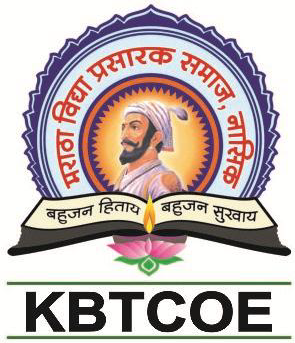

|

|
Nashik District Maratha Vidya Prasarak Samaj's
Karmaveer Adv. Baburao Ganpatrao Thakare College of Engineering
Udoji Maratha Boarding Campus, Near Pumping Station, Gangapur Road, Nashik
Permanently Affiliated to Savitribai Phule Pune University, Pune and Approved by AICTE, New Delhi
|

|
About MVP:
The Maratha Vidya Prasarak Samaj is one of the most prestigious centers of learning in the State of Maharashtra.It manages 477 educational institutes and it is one of the premier organization in the jurisdiction of Savitribai Phule Pune University. At present total strength of student is around 2,00,000. History says that the credit for the birth of M. V. P. Samaj goes to the young, enthusiastic and devoted team of social workers and educationists, Karmaveer Raosaheb Thorat, Bhausaheb Hire, Kakasaheb Wagh, Annasaheb Murkute & Ganpat Dada More who laid the foundation of the Samaj. Adv. B. G. Thakare, Adv. Vitthalrao Hande & Dr. Vasantrao Pawar are major contributor of Samaj. They were the devotees who envisioned a culture and knowledge centric society. The motto of the Samaj is “Bahujan Hitay Bahujan Sukhay”, for the well being and happiness of the masses to kindle the social cause.